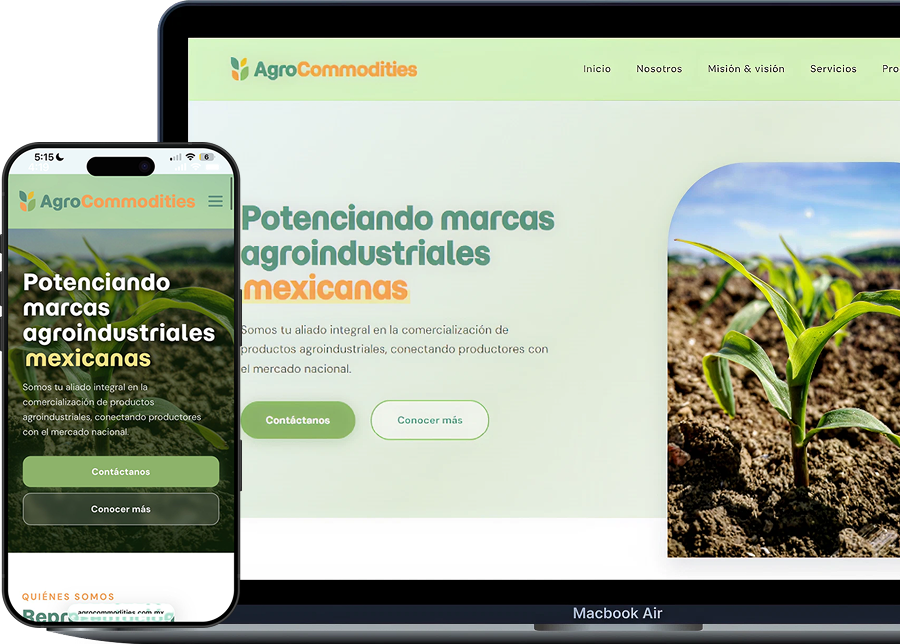
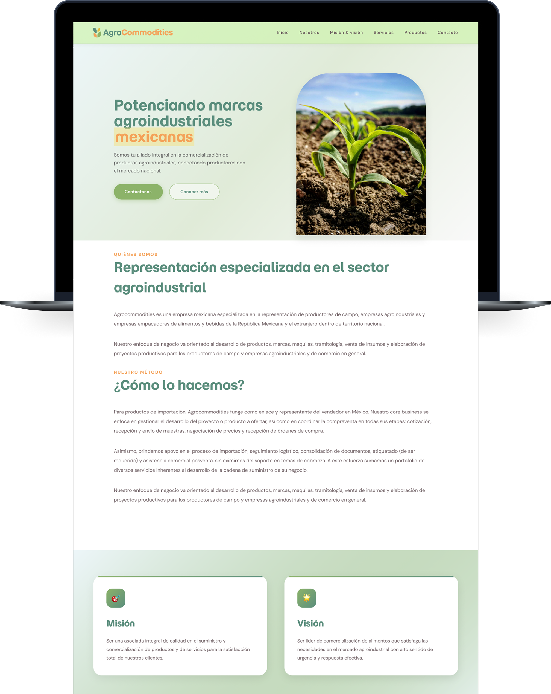
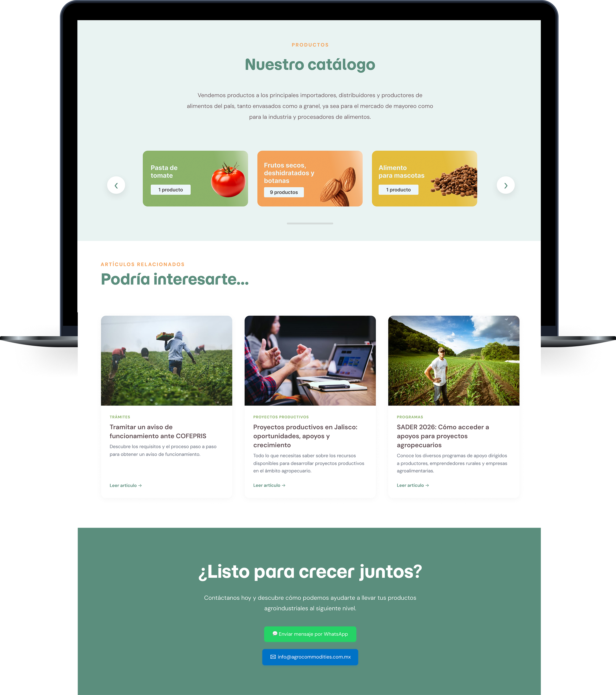

Tools
Tech stack
Here you can see the list of technologies and tools that drive the development, scalability, and performance of this project.
A website built to serve every kind of visitor: producer, buyer, or partner.
Structuring complexity: a B2B catalog site for Mexico's agro-industry. A digital ecosystem designed to streamline product and services management, and improve brand online presence.
Visit Website
AgroCommodities, a Mexican company specialized in the commercial representation of agricultural producers, agro-industrial companies, and food and beverage packers looking to operate in Mexico.
The main challenge was organizing AgroCommodities' wide range of information: multiple B2B service lines, and a highly diverse product catalog into a clear, coherent web experience, without overwhelming or confusing users with very different needs.
A corporate website that clearly communicates AgroCommodities' business model and services: representation, logistics, contract manufacturing (maquila), and productive project development. The website presents its product catalog in a browsable, visually organized way, with a direct contact flow.
The website was structured around two distinct yet connected user journeys: one for the product catalog and another for services. A unified visual system and direct contact through WhatsApp and email create a seamless experience, making it easy for users to explore, connect, and convert.


Here you can know the opinion of our client about the project, the process, and the final product.
"From the beginning, it felt like a real collaboration. They understood what we were trying to achieve and turned it into a website that’s clean, easy to use, and feels true to our brand. We’ve had great feedback from both customers and our team."
Founder of Propiedades Mendoza Curi
Here you can see the list of technologies and tools that drive the development, scalability, and performance of this project.
Whether you need a business website, a custom platform, or workflow automation, we can help bring your ideas to life.